7. Precipitación
«La precipitación no es solamente una altura de agua: es el resultado observable de una cadena de procesos atmosféricos y la entrada principal de numerosos sistemas hidrológicos».
(Síntesis del capítulo)
7.1. Introducción
La precipitación es el agua, en estado líquido o sólido, que cae desde la atmósfera y alcanza la superficie terrestre por acción de la gravedad. Esta definición parece sencilla, pero la variable que se utiliza en hidrología integra procesos que ocurren en escalas muy diferentes: la activación de aerosoles de tamaño micrométrico, el crecimiento de gotas y cristales dentro de una nube, la organización de sistemas meteorológicos de cientos de kilómetros y la interacción de esas estructuras con la topografía. El valor finalmente observado depende, además, del instrumento, de su exposición al viento, del intervalo de acumulación y del procedimiento de control de calidad.
Para la ingeniería civil, la precipitación es simultáneamente una acción de diseño, una entrada de modelos y una fuente de riesgo. Una tormenta intensa puede controlar el diámetro de un colector urbano; una secuencia de meses húmedos puede determinar la operación de un embalse; la acumulación de nieve condiciona la disponibilidad estacional de agua y las cargas sobre estructuras; y una climatología mal representada puede sesgar la evaluación de sequías, inundaciones o estabilidad de laderas. Por ello, no basta con descargar una serie y calcular su promedio: es necesario comprender qué mide, cómo fue producida y para qué escala resulta representativa (Chow et al., 1994; Robinson and Ward, 2017; Shaw et al., 2011).
Este capítulo desarrolla cuatro capacidades. Al finalizar, el lector debería poder:
explicar los mecanismos físicos que producen precipitación líquida y sólida;
distinguir observaciones puntuales, estimaciones remotas, reanálisis y productos fusionados;
diseñar un flujo reproducible de control de calidad, análisis exploratorio, relleno e interpolación; y
seleccionar datos y métodos coherentes con una aplicación de ingeniería civil.

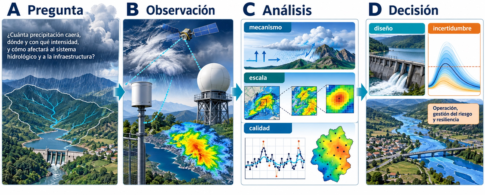
Figura 7.1 Cadena conceptual que conecta la pregunta de ingeniería, las fuentes de evidencia, el análisis y la decisión. Composición editorial basada en material gráfico suministrado por el autor.
La Figura 1 sirve de mapa del capítulo: sus cuatro paneles corresponden, respectivamente, a formulación del problema, observación, análisis y uso del resultado.
La organización parte de la física del agua atmosférica y avanza hacia la observación, el análisis y la decisión de ingeniería, como resume la Figura 1. La precipitación es el flujo que devuelve agua desde la atmósfera a la superficie dentro del ciclo hidrológico, mientras la cuenca hidrográfica define el dominio natural en el cual ese aporte se transforma, almacena y propaga. El tratamiento sigue la tradición de textos de hidrología aplicada y de procesos, complementada con normas internacionales de observación (Chow et al., 1994; Robinson and Ward, 2017; Shaw et al., 2011; World Meteorological Organization, 2008).
Pregunta guía
Si una estación registra 42 mm durante una tormenta y un producto satelital entrega 31 mm en la celda que la contiene, ¿cuál de los dos valores es correcto? La respuesta rigurosa es que representan soportes espaciales, algoritmos y fuentes de error diferentes. Antes de compararlos hay que armonizar período, unidad, zona horaria, fase de la precipitación y escala espacial.
7.2. Fundamentos físicos

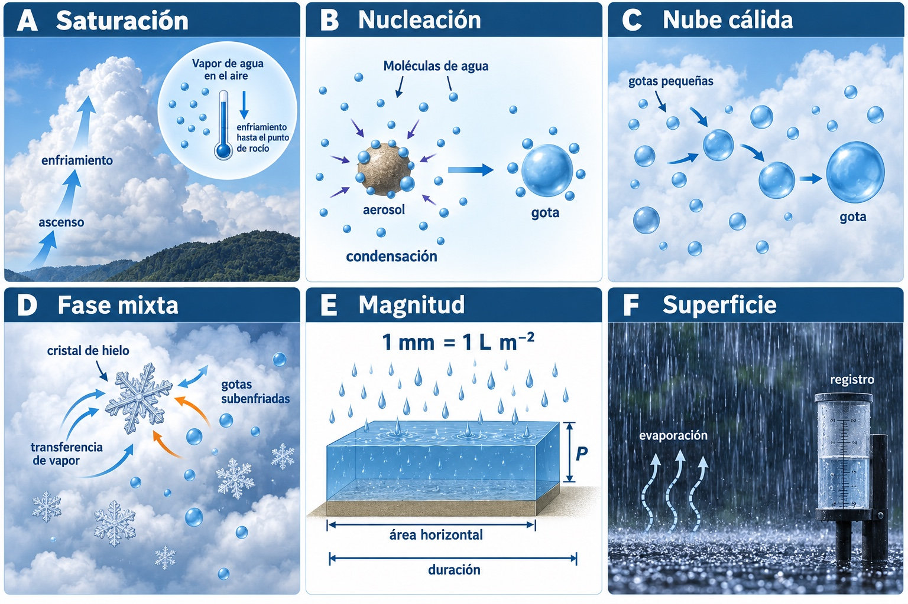
Figura 7.2 Relaciones entre termodinámica, microfísica, fase y magnitudes observadas. Composición editorial basada en material gráfico suministrado por el autor.
Cada subsección se apoya en uno o más paneles de la Figura 2: saturación y nucleación para el paso de vapor a nube, la fotografía de convección profunda como contexto de la estructura vertical, nube cálida para coalescencia, fase mixta para Bergeron-Findeisen, y magnitud y superficie para acumulación e intensidad.
7.2.1. Del vapor a la nube
La presencia de vapor de agua no garantiza precipitación. Primero debe producirse saturación, normalmente porque una parcela de aire húmedo asciende, se expande al encontrar menor presión y se enfría aproximadamente de manera adiabática, proceso desarrollado en Procesos adiabáticos. Cuando la temperatura alcanza el punto de rocío, el exceso de vapor puede condensar. La presión de vapor de saturación aumenta con la temperatura de acuerdo con la relación de Humedad atmosférica y ley de Clausius-Clapeyron; cerca de las temperaturas habituales de la troposfera, el incremento es del orden de 6–7 % por grado Celsius. Esta relación describe una capacidad termodinámica, no una regla automática para la precipitación observada, porque también intervienen la disponibilidad de humedad, la dinámica y la eficiencia microfísica. El panel «Saturación» de la Figura 2 separa esos eslabones (Hakim and Patoux, 2022; Wallace and Hobbs, 2006).
La condensación homogénea requeriría sobresaturaciones mucho mayores que las presentes en la atmósfera. En condiciones reales, el vapor se deposita sobre núcleos de condensación de nubes: partículas higroscópicas de sal marina, sulfatos, polvo mineral o productos de combustión. Para formar hielo existen núcleos de congelación y de deposición, menos abundantes. La población, tamaño y composición de los aerosoles influyen en el número inicial de gotas y, por tanto, en la eficiencia con que una nube transforma agua condensada en hidrometeoros precipitantes.
Una nube es visible porque contiene gotas o cristales, pero la mayoría de esas partículas son demasiado pequeñas para caer hasta el suelo. Una gota nubosa típica tiene un diámetro cercano a 10–20 micrómetros, mientras que una gota de lluvia posee diámetros del orden de 0,1–5 mm. El crecimiento exclusivo por condensación se vuelve lento a medida que la gota aumenta; son necesarios mecanismos de colección o procesos de hielo para alcanzar tamaños precipitantes, transición representada por los paneles «Nucleación», «Nube cálida» y «Fase mixta» de la Figura 2 (Hakim and Patoux, 2022; Wallace and Hobbs, 2006).
7.2.2. Nubes y estructura vertical
Los nombres de las nubes entregan información útil sobre altura, forma y potencial de precipitación. Las nubes estratiformes poseen gran desarrollo horizontal y movimientos verticales relativamente débiles; suelen producir precipitación extendida y de intensidad baja o moderada. Las nubes cumuliformes se asocian con convección y desarrollo vertical; un cumulonimbo puede atravesar gran parte de la Capas de la atmósfera denominada troposfera y generar chubascos intensos, granizo, rayos y ráfagas. El prefijo nimbo identifica nubes asociadas a precipitación, mientras que cirro, alto y strato ayudan a describir nivel y estructura. La fotografía de convección profunda y el panel «Fase mixta» de la Figura 2 muestran por qué estructura y temperatura deben interpretarse conjuntamente.
La temperatura interna permite distinguir tres ambientes microfísicos:
en una nube cálida, la región activa se encuentra sobre 0 °C y domina la colisión-coalescencia;
en una nube fría, predominan cristales de hielo y procesos de deposición y agregación;
en una nube de fase mixta, coexisten cristales y gotas de agua superenfriada, situación especialmente eficiente para producir precipitación.
El agua líquida puede permanecer superenfriada a temperaturas menores que 0 °C. Por ello, la fase observada en superficie no se deduce solamente de la temperatura del suelo: depende del perfil térmico completo entre la nube y el punto de observación. Un copo puede fundirse en una capa cálida y llegar como lluvia; una gota puede volver a congelarse en una capa fría y producir aguanieve o lluvia engelante.
7.2.3. Colisión y coalescencia en nubes cálidas
En una nube cálida, la distribución de tamaños es esencial. Las gotas grandes poseen mayor velocidad terminal que las pequeñas y pueden alcanzarlas. La probabilidad de que una gota colectora intercepte otra se denomina eficiencia de colisión; la fracción de colisiones que termina en una sola gota se denomina eficiencia de coalescencia. Turbulencia, carga eléctrica, concentración de agua líquida y amplitud del espectro de tamaños modifican ambas eficiencias.
El crecimiento se acelera una vez que aparecen algunas gotas suficientemente grandes. Estas gotas barren un volumen creciente, incorporan gotas menores y pueden superar las corrientes ascendentes. Si su diámetro se hace excesivo, la deformación aerodinámica produce fragmentación. Por esta razón, la lluvia natural contiene una distribución de tamaños y no gotas idénticas. En ambientes tropicales y subtropicales, la colisión-coalescencia puede generar lluvia intensa sin intervención de hielo, como sintetiza el panel «Nube cálida» de la Figura 2 (Hakim and Patoux, 2022; Wallace and Hobbs, 2006).
7.2.4. Proceso Bergeron-Findeisen y crecimiento del hielo
En una nube de fase mixta, la presión de vapor de saturación sobre hielo es menor que sobre agua líquida a la misma temperatura bajo cero. Si el aire está saturado respecto del agua, queda sobresaturado respecto del hielo. El vapor se deposita preferentemente sobre los cristales, mientras las gotas superenfriadas tienden a evaporarse: es el proceso de Bergeron-Findeisen, representado en el panel «Fase mixta» de la Figura 2. Los cristales también crecen por agregación con otros cristales y por acreción de gotas superenfriadas, proceso denominado riming (Wallace and Hobbs, 2006).
La forma final depende de temperatura y humedad: placas, columnas, dendritas y partículas granuladas son manifestaciones de historias microfísicas diferentes. Los agregados pueden llegar al suelo como nieve o fundirse al atravesar una capa cálida. El granizo requiere corrientes ascendentes intensas que mantengan embriones de hielo dentro de regiones con agua superenfriada, donde acumulan sucesivas capas antes de que su peso supere la sustentación.
Idea clave
Condensación no equivale a precipitación. La condensación forma la nube; la precipitación exige crecimiento adicional, supervivencia durante la caída y llegada a la superficie. Parte del agua puede evaporarse bajo la nube y producir virga.
7.2.5. Conversión a intensidad y acumulación
La altura de precipitación \(P\) expresa el espesor que tendría el agua si se distribuyera uniformemente sobre una superficie horizontal, sin infiltración, escorrentía ni evaporación. El panel «Magnitud» de la Figura 2 conecta altura, duración e intensidad. Un milímetro equivale a un litro por metro cuadrado. Para un área \(A\), el volumen es:
donde \(P\) debe expresarse en metros para obtener \(V\) en metros cúbicos. Así, 25 mm sobre una cuenca de 80 km² representan un volumen bruto de 2 millones de m³. Ese volumen no es el caudal de salida: una fracción será interceptada, almacenada, infiltrada o evapotranspirada.
La intensidad media durante un intervalo \(\Delta t\) es:
Una misma acumulación puede provenir de intensidades muy diferentes. Cincuenta milímetros en un mes afectan el balance hídrico; cincuenta milímetros en treinta minutos pueden controlar una obra de drenaje. Siempre deben informarse acumulación, duración y resolución temporal.
7.3. Mecanismos de ascenso y tipos de precipitación

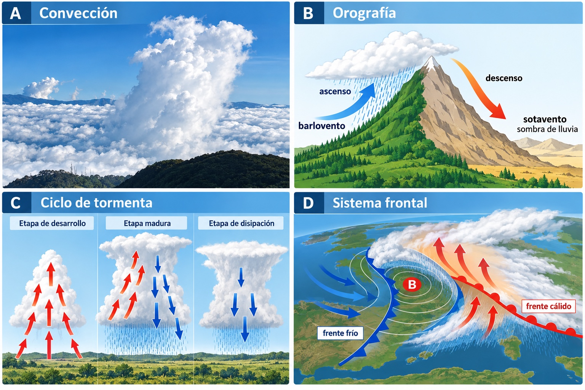
Figura 7.3 Mecanismos de ascenso, fase de la precipitación y controles regionales relevantes para Chile. Composición editorial basada en material gráfico suministrado por el autor.
Los cuatro paneles de la Figura 3 relacionan evidencia visible y modelos conceptuales: convección profunda, ascenso orográfico, ciclo de una tormenta y organización frontal. En conjunto apoyan la interpretación de los mecanismos dominantes en Chile; la fase de los hidrometeoros se complementa con la Figura 2.
7.3.1. Precipitación convectiva
La convección se inicia cuando una parcela próxima a la superficie adquiere flotabilidad positiva por calentamiento, aporte de humedad o convergencia. Si supera un nivel de libre convección, continúa ascendiendo mientras sea más cálida que su entorno. La Liberación de calor latente liberada durante la condensación refuerza el ascenso y permite desarrollar cúmulos congestus o cumulonimbos. El panel «Convección» de la Figura 3 resume esta realimentación.
Las tormentas convectivas suelen tener alta intensidad, corta duración y fuerte variabilidad espacial. Una estación puede registrar un máximo y otra, a pocos kilómetros, casi nada. Esta intermitencia vuelve exigente el diseño de redes y la validación de productos grillados. En el Altiplano chileno, la convección estival contribuye a la precipitación de altura, mientras que en el centro-sur puede acompañar inestabilidad postfrontal o forzamientos locales.
7.3.2. Precipitación orográfica
Cuando un flujo húmedo encuentra una cordillera, su componente perpendicular al relieve fuerza el ascenso en barlovento. El aire se enfría, aumenta su humedad relativa y puede condensar. La respuesta depende de la estabilidad, velocidad y profundidad del flujo, altura de la barrera, orientación de la ladera y escala temporal del sistema. No toda elevación produce el mismo aumento: una atmósfera estable puede bloquearse o desviarse y una nube puede precipitar después de cruzar la cumbre. Esta interacción prolonga la discusión de Influencia de la topografía y está esquematizada en el panel «Orografía» de la Figura 3.
En sotavento, el aire desciende, se comprime y calienta, reduciendo su humedad relativa. Se forma una sombra de lluvia. En Chile, la Cordillera de la Costa y los Andes organizan gradientes muy marcados. Estos efectos explican por qué una interpolación basada sólo en distancia horizontal suele ser insuficiente y por qué la elevación debe incorporarse con criterio físico, no como covariable automática.
7.3.3. Precipitación ciclónica o frontal
En latitudes medias, gran parte de la precipitación se asocia a ciclones extratropicales y frentes. Un frente cálido presenta una pendiente suave: el aire cálido se desliza sobre el aire frío, generando nubosidad estratiforme extensa y precipitación que puede anteceder por horas al paso frontal. Un frente frío tiene pendiente mayor y ascenso más abrupto; puede producir bandas angostas de lluvia intensa, convección y cambios rápidos de las Variables utilizadas para caracterizar el tiempo y el clima. Cuando el frente frío alcanza al cálido se forma un frente ocluido; un frente puede además volverse casi estacionario. El panel «Sistema frontal» de la Figura 3 destaca la disposición de las masas de aire, los frentes y el ascenso (Hakim and Patoux, 2022; Wallace and Hobbs, 2006).
Los ríos atmosféricos son corredores largos y estrechos de transporte integrado de vapor. Cuando impactan una barrera montañosa pueden producir eventos persistentes y extremos. No constituyen un mecanismo microfísico distinto, sino una organización del transporte de humedad que alimenta el ascenso frontal y orográfico.
7.3.4. Precipitación en Chile
Chile presenta un gradiente latitudinal extraordinario y una fuerte modulación topográfica. En el norte hiperárido, la subsidencia asociada al anticiclón subtropical del Pacífico, la corriente de Humboldt y la barrera andina limitan la lluvia costera, aunque el Altiplano recibe precipitación convectiva estival. En Chile central domina un régimen mediterráneo, con máximos invernales asociados a sistemas frontales y gran variabilidad interanual. Hacia el sur y la zona austral, aumenta la frecuencia de sistemas frontales y la precipitación se distribuye durante una fracción mayor del año. La exposición a los vientos del oeste y las barreras montañosas producen contrastes pronunciados entre barlovento y sotavento. Este patrón debe leerse junto con Oscilaciones climáticas de gran escala y los Regímenes hidrológicos; los paneles «Convección», «Orografía» y «Sistema frontal» de la Figura 3 permiten reconocer los controles de primer orden que cambian de norte a sur (Garreaud, 2009).
Esta síntesis no reemplaza el análisis local. La orientación de una cuenca, su rango altitudinal, distancia al océano, exposición a frentes y transición lluvia-nieve pueden ser más relevantes que la clasificación climática regional. Para una obra, conviene formular una hipótesis del mecanismo dominante y contrastarla con mapas sinópticos, perfiles de temperatura, estaciones y productos remotos.
7.3.5. Formas de precipitación
La lluvia está compuesta por gotas líquidas, mientras que la llovizna contiene gotas pequeñas y suele provenir de nubes estratiformes bajas. La nieve consiste en cristales o agregados que no se fundieron antes de llegar al suelo. La aguanieve y la lluvia engelante implican perfiles térmicos complejos; esta última permanece líquida hasta congelarse sobre superficies. El granizo se forma en convección profunda y no debe confundirse con granos de hielo producidos por recongelación.
En hidrología nival se trabaja con el equivalente en agua de nieve (SWE), es decir, la altura de agua que resultaría de fundir la nieve. La altura de nieve por sí sola no determina el almacenamiento porque la densidad evoluciona con temperatura, viento, metamorfismo y compactación. Su liberación posterior ayuda a explicar los regímenes nivo-pluviales descritos en Regímenes hidrológicos; el panel «Fase mixta» de la Figura 2 recuerda que la fase depende de la microfísica y del perfil térmico completo.
7.4. Medición de la precipitación

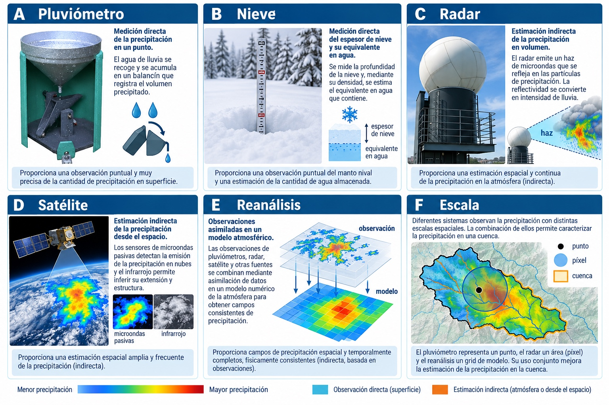
Figura 7.4 Sistemas de observación y diferencias de soporte entre puntos, píxeles y cuencas. Composición editorial basada en material gráfico suministrado por el autor.
La Figura 4 asigna un panel a pluviómetros, nieve, radar, satélite y reanálisis; el panel «Escala» es transversal a todas las subsecciones de medición.
7.4.1. Pluviómetros y pluviógrafos
Un pluviómetro de almacenamiento recoge agua en un recipiente y entrega la acumulación entre observaciones. Un pluviógrafo registra la evolución temporal. Ambos miden una entrada del El ciclo hidrológico sobre un área de captación muy pequeña; por eso, representatividad espacial y exactitud instrumental son problemas distintos. El panel «Pluviómetro» de la Figura 4 separa captación, acumulación y control. Entre los sensores automáticos destacan (Chow et al., 1994; Shaw et al., 2011; World Meteorological Organization, 2021):
balancín (tipping bucket): cada vuelco representa un volumen nominal; ofrece buena resolución temporal, pero puede subestimar intensidades altas durante el movimiento y requiere corrección y mantenimiento;
pesaje: registra la masa acumulada y puede medir precipitación sólida con anticongelante o calefacción apropiada;
óptico o disdrómetro: estima tamaño y velocidad de partículas, útil para microfísica y clasificación, aunque no sustituye automáticamente una referencia de acumulación.
La lectura está afectada por viento, salpicadura, evaporación, mojado de las paredes, obstrucción, inclinación, resolución y cambio de fase. El viento desvía especialmente copos de nieve y gotas pequeñas, de modo que la captación puede ser menor que la precipitación verdadera. La instalación debe seguir normas de altura, nivelación, despeje y protección; el metadato de exposición es tan importante como el valor (World Meteorological Organization, 2008; World Meteorological Organization, 2021).
La precipitación corregida puede expresarse como la suma de la lectura más ajustes por viento, mojado, evaporación y trazas. Estos términos no son constantes: dependen del tipo de instrumento, velocidad del viento a la altura del borde, fase y temperatura. En nieve, la subcaptación aerodinámica puede dominar el balance de error; aplicar una corrección desarrollada para otro protector o clima puede ser peor que conservar la lectura original. Por ello deben archivarse tanto el valor observado como el corregido, junto con la ecuación, sus parámetros y el período de validez (Shaw et al., 2011; World Meteorological Organization, 2021).
El intervalo hidrológico debe registrarse explícitamente. En Chile, algunos totales diarios meteorológicos se acumulan entre 12:00 UTC de días consecutivos y no coinciden necesariamente con el día civil local (Dirección Meteorológica de Chile, 2026). Mezclar series con ventanas diferentes puede desplazar tormentas y crear falsos desacuerdos.
7.4.2. Nivómetros y medición de nieve
La nieve puede medirse con reglas, tablas de nieve, tubos de muestreo, almohadas de nieve y sensores de distancia. Las almohadas infieren SWE a partir de presión; los sensores ultrasónicos o láser miden altura. Ninguno resuelve por sí solo toda la heterogeneidad del manto. En terrenos de montaña, redistribución eólica, avalanchas, vegetación y gradientes térmicos producen variaciones mayores que las observadas por un único punto.
7.4.3. Radar meteorológico
El radar emite pulsos electromagnéticos y mide la energía retrodispersada por hidrometeoros. La reflectividad \(Z\) se relaciona con la distribución de tamaños; para lluvia se emplea una relación empírica:
donde \(R\) es la intensidad y \(a\), \(b\) dependen del tipo de precipitación y la climatología. Por tanto, el radar no mide lluvia superficial directamente. Requiere control de ecos de terreno, propagación anómala, atenuación, banda brillante, bloqueo del haz y calibración con pluviómetros. Su principal fortaleza es describir la estructura espacial y temporal de tormentas a escalas que una red puntual no resuelve.
Además, el haz se ensancha y asciende respecto de la superficie con la distancia al radar. Una reflectividad medida a varios kilómetros de altura puede atravesar capas de fusión, evaporación o advección antes de llegar al suelo. Los radares polarimétricos añaden variables sensibles a forma, orientación y fase de los hidrometeoros, mejorando clasificación y estimación, pero no eliminan la necesidad de control terrestre. La consistencia física con los balances de masa y energía presentados en Leyes de conservación que rigen el movimiento atmosférico ayuda a interpretar evoluciones de tormenta, aunque no convierte la relación \(Z-R\) en universal (Wallace and Hobbs, 2006).
7.4.4. Satélites
Los sensores infrarrojos en satélites geoestacionarios observan con alta frecuencia la temperatura del tope nuboso; la relación con lluvia es indirecta y falla, por ejemplo, en nubes cálidas precipitantes o nubes frías no precipitantes. Los sensores de microondas pasivas en órbita baja responden más directamente a emisión y dispersión por gotas y hielo, pero muestrean con menor frecuencia. Los algoritmos multisatélite combinan ambos tipos y, en algunos productos, ajustan acumulaciones con pluviómetros. El panel «Satélite» de la Figura 4 muestra esa complementariedad entre observación, algoritmo y campo estimado (Huffman et al., 2020).
La misión GPM y el producto IMERG proporcionan estimaciones multisatélite a escala casi global, en resoluciones subdiarias y versiones de distinta latencia. Las versiones Early y Late favorecen operación; la Final incorpora procesamiento retrospectivo y es preferible para investigación cuando la latencia no importa. Debe distinguirse entre tasa en \(\mathrm{mm\,h^{-1}}\) y acumulación en mm, así como entre campo calibrado y no calibrado (Huffman et al., 2020).
7.4.5. Reanálisis y productos fusionados
Un reanálisis asimila observaciones heterogéneas en un modelo atmosférico mantenido constante durante todo el período. Produce campos físicamente coherentes y completos, pero la precipitación suele ser una salida del modelo, no una observación asimilada directamente. ERA5 y ERA5-Land son ejemplos relevantes (Hersbach et al., 2020; Muñoz-Sabater et al., 2021). Su continuidad es valiosa para balances y forzamiento hidrológico, mientras que sesgos orográficos, parametrización convectiva y suavizado de extremos exigen evaluación local.
La coherencia de un reanálisis significa que las variables evolucionan bajo un mismo sistema de ecuaciones y restricciones, no que cada variable sea localmente exacta. Una grilla puede cerrar razonablemente el balance atmosférico a gran escala y, al mismo tiempo, desplazar una banda frontal o distribuir una tormenta convectiva sobre un área excesiva. Por ello, el reanálisis resulta especialmente útil para interpretar mecanismos, circulación y covariables, pero requiere corrección o ensamble cuando la cantidad de lluvia local controla una decisión (Hersbach et al., 2020; Muñoz-Sabater et al., 2021).
Los productos fusionados combinan pluviómetros, satélites y modelos. Su ventaja es aprovechar fortalezas complementarias; su riesgo es la dependencia no evidente con los datos usados para validarlos. Si las estaciones de una cuenca participaron en el ajuste del producto, compararlo con esas mismas estaciones no constituye validación independiente.
Regla operacional
Ninguna tecnología domina en todas las escalas. Para eventos intensos conviene combinar pluviómetros de referencia con radar o satélite; para climatología, estaciones controladas y productos de largo período; para zonas sin estaciones, un ensamble de productos con evaluación regional y propagación de incertidumbre.
7.5. Fuentes de datos mundiales y para Chile

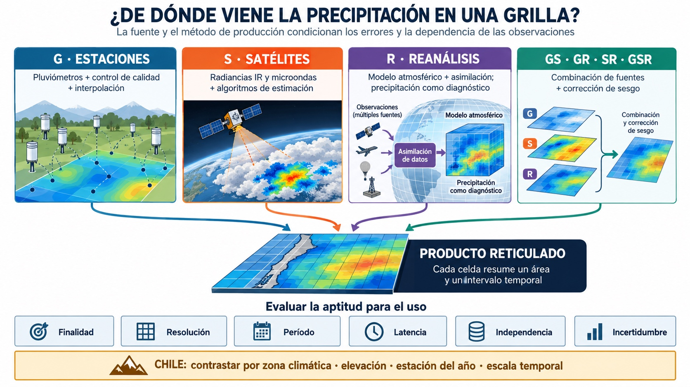
Figura 7.5 Familias de productos grillados y criterios para seleccionar una fuente mundial o chilena. Síntesis conceptual elaborada a partir de Sun et al. (2018), Serrano-Notivoli y Tejedor (2021) y Mankin et al. (2025).
La Figura 5 separa las familias según la información que domina su construcción. Esta clasificación es más informativa que el nombre del archivo: una grilla puede estar basada sólo en estaciones (G), en recuperación satelital (S), en reanálisis (R) o combinar dos o tres fuentes (GS, GR, SR, GSR). Las categorías no son sinónimo de calidad y tampoco son mutuamente excluyentes. Por ejemplo, una estimación satelital corregida con pluviómetros es GS, mientras una grilla derivada de un reanálisis y ajustada con estaciones es GR (Mankin et al., 2025; Sun et al., 2018).
7.5.1. Cómo seleccionar una fuente
La selección debe comenzar por la pregunta y no por la disponibilidad de una descarga. Se recomienda definir: variable y fase; soporte puntual o areal; paso temporal; período; latencia admisible; dominio; resolución espacial; necesidad de incertidumbre; licencia; versión y política de actualización. Una grilla de 0,1° no implica conocimiento independiente a 10 km: la resolución nominal es el espaciamiento de celdas, mientras la resolución efectiva depende de sensores, densidad de estaciones, modelo, interpolación y suavizado.
Para modelación hidrológica también se debe comprobar que la escala del forzante represente los procesos dominantes. Una crecida convectiva en una cuenca pequeña puede exigir lluvia subdiaria, mientras un balance hídrico regional puede tolerar un producto diario o mensual más grueso. Cobertura temporal, latencia, variables acompañantes y coherencia entre ellas son parte de la aptitud para el uso; no existe un producto universalmente mejor (Mankin et al., 2025).
7.5.2. Datos in situ mundiales
GHCN-Daily, mantenido por NOAA/NCEI, integra observaciones diarias de temperatura, precipitación y nieve de estaciones terrestres de numerosos países. Incluye banderas de calidad y es apropiado para análisis históricos y extremos, siempre que se examinen cobertura y procedencia (Menne et al., 2012). GPCC, operado por el Deutscher Wetterdienst bajo auspicio de la OMM, reúne datos pluviométricos y genera análisis grillados mensuales y diarios con productos diferenciados por latencia y finalidad (Becker et al., 2013; Global Precipitation Climatology Centre, 2025).
En todos los archivos globales, la ausencia de una estación no significa ausencia de medición: restricciones nacionales, licencias y retrasos de intercambio limitan la colección. Para estudios de diseño se debe consultar también al servicio nacional y documentar la versión exacta descargada.
7.5.3. Productos grillados globales
Las principales familias tienen fortalezas y errores estructuralmente distintos:
las grillas basadas en estaciones interpolan mediciones puntuales y suelen ser sólidas para climatologías terrestres donde la red es densa, pero heredan cambios de cobertura y suavizan extremos;
los productos satelitales recuperan precipitación desde radiancias y ofrecen alta frecuencia y cobertura sobre regiones poco instrumentadas, aunque dependen del sensor y del algoritmo para lluvia cálida, nieve, orografía y eventos intensos;
los reanálisis generan campos continuos y multivariables mediante un modelo y asimilación de observaciones; su precipitación es principalmente una variable modelada y puede desplazar tormentas o suavizar máximos;
los productos fusionados combinan fuentes para reducir debilidades individuales, pero sus errores y dependencias también se combinan. La corrección con estaciones mejora frecuentemente el valor local, a costa de perder independencia respecto de esas mismas estaciones.
Las intercomparaciones globales muestran diferencias importantes entre productos incluso dentro de una misma familia, especialmente en regiones montañosas, trópicos y altas latitudes. Por ello, la procedencia de la información y el método de estimación deben acompañar siempre a la resolución declarada (Sun et al., 2018).
Producto |
Fuente principal |
Escala típica |
Fortaleza |
Precaución |
|---|---|---|---|---|
CHIRPS |
Infrarrojo y estaciones |
diaria/mensual; 0,05° |
larga serie terrestre desde 1981 |
la densidad de estaciones y desempeño varían regionalmente |
GPM IMERG |
constelación multisitélite y ajuste |
30 min; 0,1° |
tormentas y baja latencia |
nieve, orografía y lluvia cálida pueden presentar sesgos |
GPCC |
pluviómetros |
diaria/mensual; varias grillas |
referencia terrestre y climatología larga |
sólo tierra; menor detalle para tormentas locales |
ERA5 / ERA5-Land |
modelo y asimilación |
horaria; grilla global/terrestre |
coherencia multivariable y cobertura completa |
precipitación modelada y extremos suavizados |
MSWEP |
estaciones, satélites y reanálisis |
subdiaria/diaria; alta resolución |
fusión multifuente y cobertura global |
dependencia con insumos y versiones; revisar licencia |
PERSIANN-CDR |
infrarrojo y ajuste mensual |
diaria; 0,25° |
registro largo útil para clima |
menor capacidad para estructura subdiaria |
CHIRPS combina climatología, observación infrarroja y estaciones para producir precipitación sobre tierra entre aproximadamente 50° S y 50° N (Funk et al., 2015). IMERG integra observaciones de la constelación GPM y extiende el registro hacia la era TRMM (Huffman et al., 2020). MSWEP combina pluviómetros, satélites y reanálisis (Beck et al., 2019). PERSIANN-CDR fue diseñado como registro climático satelital (Ashouri et al., 2015). Los períodos, algoritmos y versiones cambian; por ello, el archivo de trabajo debe guardar DOI, versión, fecha de acceso y variables originales, no sólo el raster procesado. También debe distinguir productos operacionales de baja latencia de reprocesamientos climáticos: una versión disponible más tarde puede incorporar calibración adicional y no reproducir exactamente lo que estuvo disponible en tiempo real.
7.5.4. Fuentes in situ en Chile
La Dirección General de Aguas (DGA) mantiene la Red Hidrométrica Nacional y publica estadísticas meteorológicas e hidrológicas desde Arica a Tierra del Fuego. Su portal permite consultar estaciones y solicitar antecedentes adicionales (Dirección General de Aguas, 2026). La Dirección Meteorológica de Chile (DMC) ofrece series históricas, estaciones automáticas, productos de precipitación y servicios web; sus reportes operacionales pueden contener datos aún no sometidos a control definitivo (Dirección Meteorológica de Chile, 2026). La Red Agroclimática Nacional y redes de instituciones, empresas o centros regionales complementan la cobertura.
Antes de unir fuentes chilenas se deben reconciliar códigos, nombres históricos, coordenadas, altitud, propietario, intervalo diario y duplicación de estaciones. Dos portales pueden distribuir la misma observación con códigos diferentes; tratarlas como estaciones independientes sobrepondera el dato.
7.5.5. Productos grillados para Chile
CR2MET ofrece precipitación diaria y temperaturas extremas sobre Chile continental en una grilla regular de 0,05°, construida mediante modelos estadísticos calibrados con observaciones y covariables de reanálisis y topografía (Boisier, 2023). Es apropiado para análisis regional, forzamiento hidrológico y comparación climática, pero no reemplaza la inspección de estaciones para extremos locales. CAMELS-CL integra atributos y series meteorológicas a escala de cuenca, útil para estudios comparativos y regionalización (Alvarez-Garreton et al., 2018).
Los productos globales CHIRPS, IMERG, ERA5-Land, MSWEP y PERSIANN también cubren Chile. Una evaluación de siete estimaciones satelitales con 366 estaciones mostró mejor desempeño general en Chile central y el sur húmedo, especialmente bajo 1000 m s.n.m., que en el norte árido y el extremo austral. El desempeño también fue mayor en otoño e invierno que en verano y primavera; reconocer días sin lluvia resultó más fácil que clasificar correctamente la intensidad de los días lluviosos (Zambrano-Bigiarini et al., 2017).
Ese resultado no debe transformarse en una tabla de posiciones permanente: los sensores, algoritmos y versiones actuales difieren de los evaluados en 2017. Sí establece un principio transferible para Chile: el desempeño relativo cambia con zona climática, estación del año, elevación, escala de agregación y métrica. Además, un producto ajustado con estaciones chilenas no puede validarse de forma independiente con esas mismas estaciones. En consecuencia, «el mejor producto para Chile» debe expresarse como «el mejor para esta región, período, escala y finalidad, según estas métricas y estaciones independientes».
Lectura correcta de una celda
El valor de una celda es una estimación para un área y un intervalo temporal definidos por el producto; no es una nueva estación ubicada en el centro del píxel. Extraer el píxel que contiene un pluviómetro y compararlo directamente con la medición puntual mezcla soportes diferentes. Esta comparación es útil, pero su error incluye tanto el error del producto como la variabilidad subcelda.
7.5.6. Trazabilidad mínima
Cada conjunto de datos debe acompañarse de una ficha con: proveedor; producto y versión; DOI o URL persistente; fecha de acceso; cobertura; unidades; calendario y zona horaria; variable exacta; factor de escala; valor faltante; sistema de coordenadas; procesamiento aplicado; y controles realizados. También se conserva el archivo original inmutable y se generan derivados mediante código reproducible.
7.6. Control de calidad

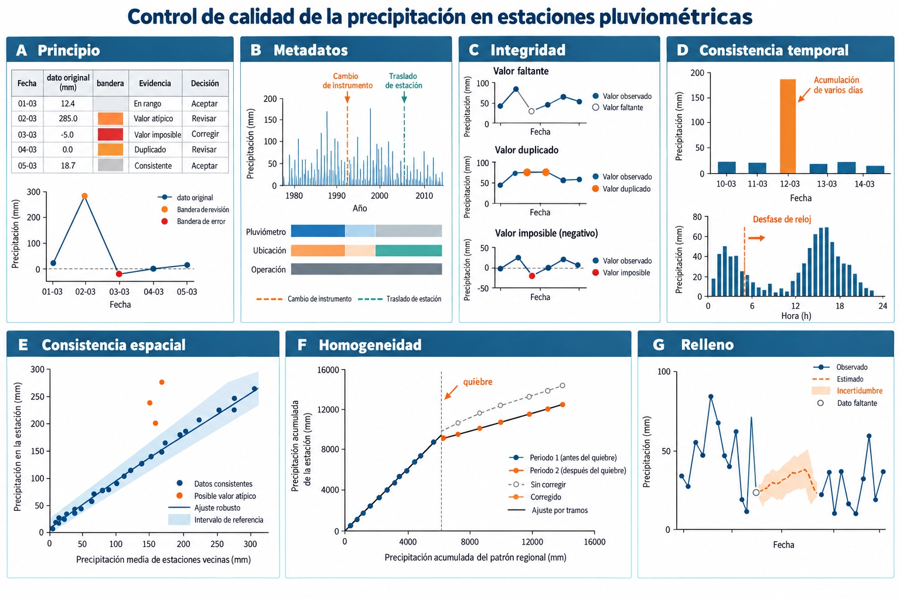
Figura 7.6 Flujo de control de calidad desde la detección hasta una decisión auditable. Composición editorial basada en material gráfico suministrado por el autor.
Cada panel de la Figura 6 corresponde a una subsección: principio general, metadatos, integridad, consistencia temporal, consistencia espacial, homogeneidad y relleno.
7.6.1. Principio general
El control de calidad no debe borrar automáticamente todo valor inusual. Una tormenta extraordinaria puede ser el dato más importante para el diseño. Es preferible separar detección, evaluación y acción. El resultado de cada prueba es una bandera, no una sentencia. Se mantiene una tabla de auditoría con valor original, bandera, evidencia, decisión y valor corregido.
7.6.2. Inventario y metadatos
La primera revisión verifica identificador, coordenadas, elevación, variable, unidad, resolución, período, zona horaria y valores codificados como ausentes. Luego se construye una cronología de cambios de instrumento, emplazamiento, observador y entorno. Un quiebre estadístico coincidente con un traslado tiene interpretación distinta de uno simultáneo en toda la región.
7.6.3. Pruebas de integridad
Las pruebas básicas incluyen:
fechas duplicadas, desordenadas o imposibles;
valores negativos de precipitación acumulada;
códigos de datos faltantes interpretados erróneamente como lluvia;
acumulaciones que disminuyen sin reinicio documentado;
repetición anormal de valores o largas secuencias constantes;
totales diarios incompatibles con subintervalos disponibles;
intensidad superior a límites instrumentales o físicos plausibles;
mezcla de milímetros, décimas de milímetro y tasas.
Los umbrales climatológicos deben ser regionales y estacionales. Un límite fijo puede rechazar eventos reales en zonas húmedas o no detectar errores en zonas áridas. Los percentiles, máximos históricos y curvas intensidad-duración son señales, no filtros automáticos.
7.6.4. Consistencia temporal
Se comprueba que los totales agregados coincidan con la suma de intervalos elementales cuando la cobertura es suficiente. Un mes con cuatro días faltantes no debe tratarse igual que un mes completo. Es necesario definir una regla de completitud antes de calcular climatologías; por ejemplo, exigir todos los días para un total mensual si no se rellena, o informar por separado el número de días válidos.
Los acumulados multidiarios no etiquetados son una fuente clásica de error. Una lectura de varios días puede aparecer concentrada en la fecha final, produciendo un extremo artificial y días secos previos. La evidencia incluye metadatos, secuencias de ceros, comparación con vecinos y códigos de acumulación (Viney and Bates, 2004).
7.6.5. Consistencia espacial
La comparación con estaciones vecinas debe considerar correlación, distancia, elevación, exposición y escala temporal. Para una estación objetivo, puede calcularse una estimación robusta con vecinos y evaluar el residuo:
Un residuo grande en escala diaria puede ser una célula convectiva real; el mismo patrón persistente en meses o años sugiere sesgo. La acumulación en varias escalas reduce falsas alarmas. Radar, satélite y reportes sinópticos constituyen evidencia auxiliar independiente, no verdad absoluta.
7.6.6. Homogeneidad
Una serie es homogénea cuando sus variaciones responden al clima y no a cambios en medición o entorno. La curva doble acumulada compara la precipitación acumulada de la estación \(P_x\) con un patrón regional \(P_p\):
Un cambio persistente de pendiente puede indicar inhomogeneidad. Si se confirma con metadatos y estaciones de referencia, una corrección clásica es:
donde \(\alpha_r\) es la pendiente del período de referencia y \(\alpha_i\) la del período corregido. No se debe corregir mecánicamente todo quiebre: una sequía regional, un cambio de Regímenes hidrológicos o una estación patrón inestable también modifican pendientes. El panel «Homogeneidad» de la Figura 6 resume la necesidad de concordancia entre patrón, quiebre y ajuste (Chow et al., 1994; World Meteorological Organization, 2008).
Pruebas como SNHT, Pettitt o métodos de homogenización relativa ayudan a localizar quiebres (Alexandersson, 1986; Pettitt, 1979). La evidencia más sólida combina prueba estadística, comparación regional y metadatos. Si el propósito son extremos, una corrección multiplicativa uniforme puede alterar la cola; debe evaluarse por separado la homogeneidad de frecuencia, intensidad y ocurrencia.
La acumulación hace visible un cambio persistente de proporcionalidad, pero también integra el error: unos pocos años muy húmedos pueden dominar la pendiente. El patrón regional debe construirse con estaciones correlacionadas y previamente revisadas; si contiene el mismo error que la estación objetivo, la curva puede parecer estable. Los métodos relativos modernos formalizan esta comparación con múltiples referencias, pero conservan la misma idea hidrológica descrita en los textos clásicos: distinguir variación regional de alteración local antes de corregir (Chow et al., 1994; Shaw et al., 2011).
7.6.7. Relleno de datos faltantes
Rellenar no crea observaciones. Todo valor estimado debe conservar una bandera y la incertidumbre correspondiente. Para vacíos aislados y estaciones similares, el promedio de tres vecinos es:
Si los módulos pluviométricos \(M\) difieren de manera apreciable, se utiliza la razón normal:
Para precipitación diaria, una regresión lineal simple puede producir valores negativos y difuminar ocurrencia. Conviene separar: (1) probabilidad de día húmedo y (2) cantidad condicionada a lluvia, o usar transformaciones y modelos adecuados a una distribución mixta. Los vacíos largos requieren cautela: la incertidumbre aumenta y un producto grillado puede servir como covariable, pero no como sustituto silencioso.
Decisión mínima antes del relleno
Pregunte si el análisis realmente exige una serie completa. Muchos estimadores toleran faltantes si se controla la cobertura. Rellenar por costumbre puede reducir artificialmente la variabilidad y producir una falsa sensación de información.
7.7. Análisis exploratorio

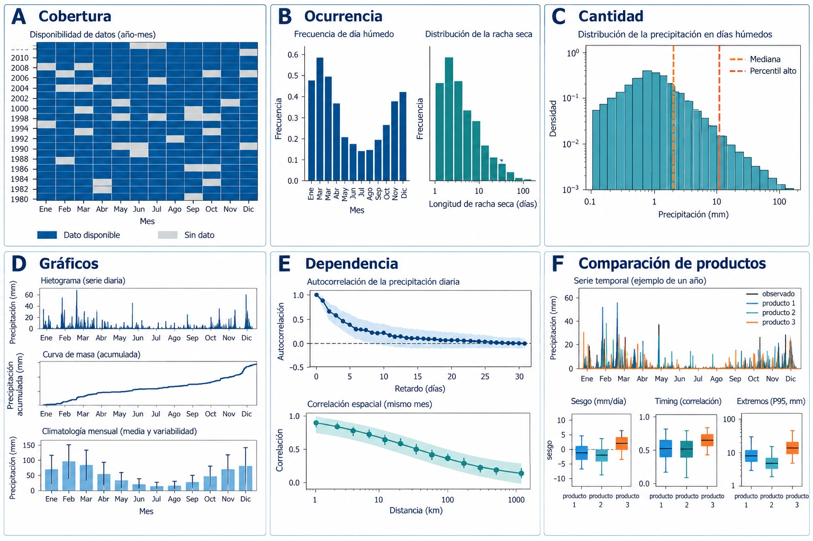
Figura 7.7 Dimensiones complementarias del análisis exploratorio de precipitación. Composición editorial basada en material gráfico suministrado por el autor.
La Figura 7 vincula cada subsección con una dimensión diagnóstica: cobertura, ocurrencia, cantidad, gráficos, dependencia y comparación de productos; la tendencia se interpreta combinando cobertura y dependencia.
7.7.1. Disponibilidad y completitud
El primer gráfico no debería ser la tendencia, sino la disponibilidad. Una matriz año-mes con número de observaciones revela cambios de resolución, vacíos estacionales y períodos utilizables. Se resumen fecha inicial y final, cantidad de datos válidos, porcentaje de completitud por mes/año, rachas faltantes y distribución de banderas.
Un mapa calendario permite ver secuencias húmedas y secas; una serie diaria muestra eventos; agregaciones mensuales y anuales revelan estacionalidad y variabilidad interanual. Ninguna escala sustituye a otra. Agregar antes de revisar puede ocultar errores, mientras interpretar ruido diario sin contexto puede exagerar anomalías.
7.7.2. Estadísticos de ocurrencia y cantidad
La precipitación posee una masa de probabilidad en cero y una distribución positiva asimétrica. Por eso conviene describir por separado:
frecuencia de días húmedos, con umbral explícito, por ejemplo \(P\geq1\ \mathrm{mm\,d^{-1}}\);
intensidad media de días húmedos;
percentiles de cantidades positivas;
máximos en ventanas de 1, 3, 6, 12 y 24 horas o 1, 3 y 5 días;
longitud de rachas secas y húmedas;
contribución de días muy húmedos al total;
totales mensuales, estacionales y anuales.
El umbral de 1 mm reduce la influencia de trazas y diferencias instrumentales, pero no es universal. Para erosión o drenaje subhorario se necesita resolución más fina; para sequía meteorológica, totales mensuales e índices normalizados pueden ser suficientes.
7.7.3. Gráficos esenciales
Un conjunto compacto de visualizaciones incluye hietograma, curva de masa, climatología mensual, diagrama de cajas por mes, mapa de calor calendario, curva de duración, máximos anuales y dispersión estación-vecino. En datos grillados se agregan mapas de media, variabilidad, frecuencia húmeda, máximos, sesgo respecto de estaciones y número efectivo de observaciones.
La curva de masa acumulada es útil para detectar desplazamientos y cambios de pendiente; sin embargo, dos series con igual total pueden tener distribución temporal completamente distinta. Para tormentas se presenta el hietograma junto al hidrograma, alineando relojes y pasos temporales.
7.7.4. Dependencia temporal y espacial
La autocorrelación de ocurrencia y cantidad afecta estimadores de incertidumbre. La precipitación diaria puede presentar persistencia por sistemas frontales y estacionalidad; la precipitación subdiaria puede agruparse en celdas y complejos convectivos. En el espacio, se examinan correlación versus distancia, variogramas y relación con elevación. Una correlación alta en totales mensuales no garantiza capacidad para reproducir máximos horarios.
7.7.5. Tendencias y no estacionariedad
Una tendencia aparente puede originarse en faltantes, cambios de estación, urbanización del entorno, oscilaciones climáticas o cambio climático. Antes de aplicar una prueba, se define variable, estación del año, período y tratamiento de autocorrelación. Se informa magnitud y sensibilidad, no sólo un valor p. Para diseño, la pregunta importante es si la hipótesis de estacionariedad es adecuada durante la vida útil de la obra y qué margen de adaptación se necesita.
7.7.6. Comparación de productos
La evaluación debe separar ocurrencia, cantidad, distribución y extremos. Métricas útiles son sesgo, error absoluto, RMSE, correlación, eficiencia, probabilidad de detección, tasa de falsas alarmas y razón de amenaza. Deben calcularse en escalas coherentes y mediante validación espacial independiente. Una alta correlación puede coexistir con un sesgo volumétrico inaceptable; un bajo RMSE puede resultar de suavizar todos los extremos.
7.8. Precipitación areal e interpolación espacial

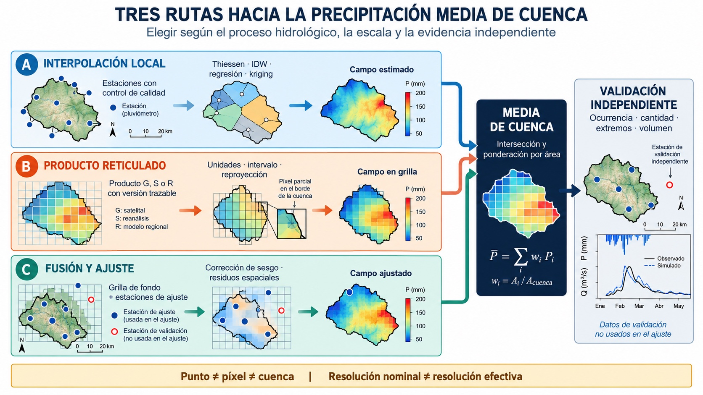
Figura 7.8 Tres rutas para estimar precipitación areal: interpolación local, producto grillado y fusión multifuente, seguidas por agregación y validación independientes. Síntesis conceptual elaborada a partir de Serrano-Notivoli y Tejedor (2021), Mankin et al. (2025) y Zambrano-Bigiarini et al. (2017).
La Figura 8 muestra que los métodos clásicos y los productos grillados no son alternativas completamente separadas. Muchos productos basados en estaciones ya aplican interpolación, regresión con covariables, splines o kriging; los productos satelitales y de reanálisis añaden información espacial distinta. La decisión moderna consiste en seleccionar, validar y eventualmente fusionar esas fuentes para el soporte y la finalidad hidrológica requeridos (Mankin et al., 2025; Serrano-Notivoli and Tejedor, 2021; Zambrano-Bigiarini et al., 2017).
7.8.1. Del punto a la cuenca
Una estación mide un punto, mientras un modelo hidrológico suele requerir la media sobre una cuenca. La precipitación areal es:
El cálculo exige una hipótesis sobre el campo entre estaciones. La incertidumbre aumenta cuando la red es escasa, el relieve complejo o la tormenta pequeña respecto de la separación entre instrumentos.
Una grilla tampoco elimina el cambio de soporte. Cada píxel representa una media o estimación espacial asociada a su algoritmo, no una observación puntual. Para obtener la media de cuenca desde celdas que la intersectan se pondera por el área efectiva dentro de la cuenca:
donde \(a_j\) es el área de intersección entre la celda \(j\) y la cuenca. En grillas geográficas, las celdas no poseen igual área; para cuencas pequeñas o bordes irregulares se debe usar intersección exacta en una proyección equivalente, no un promedio simple de centros de píxel.
7.8.2. Promedio aritmético
Para \(N\) estaciones:
Es aceptable cuando la red es densa y aproximadamente uniforme y el gradiente espacial es débil. Su simplicidad es una ventaja pedagógica y operacional, pero asigna igual área de influencia a todas las estaciones.
7.8.3. Polígonos de Thiessen
Los polígonos de Voronoi asignan cada punto a la estación más cercana. Si \(A_i\) es la intersección del polígono con la cuenca:
El método incorpora distribución irregular, es reproducible y conserva exactamente los valores observados. No considera relieve, dirección de tormenta ni gradientes y sus pesos cambian al agregar o retirar estaciones.
7.8.4. Isoyetas
Las isoyetas unen puntos de igual precipitación. Si \(a_j\) es el área entre isoyetas consecutivas \(P_j\) y \(P_{j+1}\):
El trazado experto puede incorporar topografía y patrón de tormenta. Su debilidad es la subjetividad; un SIG mejora reproducibilidad, pero no elimina la necesidad de justificar el modelo de superficie.
7.8.5. Inverso de la distancia
En IDW, la estimación en \(s_0\) es:
con \(p\) frecuentemente igual a 2. Valores altos de \(p\) enfatizan vecinos cercanos. IDW es transparente, pero genera «ojos de toro», no representa tendencia y carece de un modelo probabilístico de error.
7.8.6. Kriging y regresión-kriging
El kriging modela dependencia espacial mediante el variograma:
La estimación es una combinación lineal insesgada de observaciones y entrega una varianza condicionada al modelo. Requiere suficientes pares a distintas distancias y un variograma defendible. En terrenos complejos, la regresión-kriging separa una tendencia explicada por elevación, coordenadas u otras covariables y aplica kriging a los residuos (Ly et al., 2013).
La precipitación positiva suele transformarse con raíz cuadrada o logaritmo, pero los ceros requieren tratamiento explícito. La transformación debe invertirse con corrección de sesgo cuando corresponda. El kriging no es automáticamente superior: con pocas estaciones o variogramas inestables, un método simple puede generalizar mejor.
El variograma separa tres rasgos: el efecto pepita representa variación no resuelta y error de medición; el umbral aproxima la varianza espacial total; y el alcance identifica la distancia más allá de la cual la dependencia es débil. Estos parámetros sólo tienen sentido respecto del soporte y período analizados. Un variograma mensual no debe utilizarse sin justificación para una tormenta horaria. La regresión-kriging es útil cuando existe una tendencia física, pero la covariable debe estar disponible también donde se predice y su relación debe validarse fuera de muestra (Chow et al., 1994; Ly et al., 2013).
7.8.7. Fusión con radar, satélite o reanálisis
Una grilla remota puede utilizarse como campo de fondo y las estaciones para corregir sesgo o interpolar residuos. Tres estrategias comunes son: factor multiplicativo por región, corrección cuantílica y merging geoestadístico. La elección depende de si importa conservar totales, distribución o secuencia temporal. Una corrección mensual no garantiza extremos horarios y una corrección celda a celda puede sobreajustar.
7.8.8. Productos grillados como alternativa operacional
Un producto grillado listo para usar es una alternativa de estado del arte cuando la red local no representa adecuadamente la variabilidad espacial, cuando se necesita cobertura temporal uniforme o cuando el área de estudio excede la capacidad de una interpolación propia. Sus ventajas prácticas son cobertura continua, pocos vacíos, procesamiento reproducible y acceso a campos subdiarios o multivariables. Sin embargo, sigue siendo una estimación modelada: puede compartir estaciones con la validación, suavizar extremos, desplazar tormentas y presentar cambios entre versiones (Mankin et al., 2025; Sun et al., 2018).
La ruta apropiada depende del problema. Una climatología terrestre con una red densa puede favorecer una grilla basada en estaciones; una tormenta en una zona sin instrumentos puede requerir satélite o radar; un balance multivariable puede aprovechar un reanálisis; y una aplicación exigente suele beneficiarse de fusión o ensamble. En topografía compleja, una resolución nominal fina no recupera automáticamente gradientes orográficos que no fueron observados o representados por el algoritmo.
Para Chile, los contrastes entre desierto, cordillera, valle central, costa y extremo austral hacen indispensable estratificar la evaluación. El análisis por región, elevación, estación del año y escala temporal puede conducir a productos distintos para sequía, balance anual y crecidas. La evaluación nacional de estimaciones satelitales confirma que el desempeño en ocurrencia no garantiza desempeño en intensidad y que los resultados de una zona húmeda no deben extrapolarse al altiplano o a la Patagonia (Zambrano-Bigiarini et al., 2017).
7.8.9. Validación cruzada
La validación de interpolación retira observaciones y predice en sus ubicaciones. En precipitación espacial conviene usar bloques o retirar estaciones completas, no puntos aleatorios de una serie, para evitar fuga de información. Para un producto publicado se debe identificar qué estaciones entraron en su calibración antes de llamarlas «independientes»; si esa información no está disponible, la incertidumbre de la evaluación debe declararse.
Se evalúan por separado ocurrencia, cantidad, extremos y secuencia temporal mediante sesgo, MAE, RMSE, correlación y métricas categóricas, estratificando por elevación, estación del año y cuantiles. La distribución mixta de ceros y valores positivos hace insuficiente una sola métrica global. También se verifican conservación del volumen sobre cuencas, plausibilidad de gradientes y sensibilidad de la respuesta hidrológica. La incertidumbre varía en espacio y tiempo y debe propagarse a los resultados; puede caracterizarse con estaciones reservadas, validación cruzada espacial, varianza de kriging o ensambles de productos (Serrano-Notivoli and Tejedor, 2021).
Secuencia recomendada
Definir soporte y escala de salida.
Inventariar estaciones y productos G, S, R o fusionados disponibles.
Controlar estaciones, dependencias y período común.
Explorar tendencia, elevación, anisotropía y variabilidad subcelda.
Ajustar un método simple y seleccionar al menos una grilla de referencia.
Validar fuera de muestra con bloques espaciales y por estratos climáticos.
Comparar ocurrencia, cantidad, extremos, secuencia y volumen areal.
Propagar incertidumbre y guardar versión, máscara de extrapolación y código.
7.9. Magnitudes hidrológicas derivadas

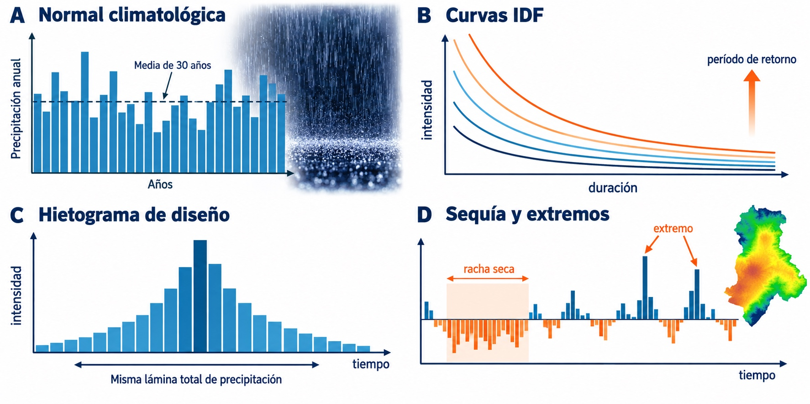
Figura 7.9 Relación entre escala temporal, frecuencia y magnitudes derivadas. Composición editorial basada en material gráfico suministrado por el autor.
La Figura 9 dedica un panel a normales, curvas IDF, hietogramas de diseño e índices de sequía y extremos.
7.9.1. Módulo y normales climatológicas
El módulo pluviométrico es la precipitación anual media calculada sobre un período largo y con cobertura suficiente. Una normal climatológica se refiere a un período estándar de 30 años, útil para comparación. No debe confundirse «normal» con «esperable cada año»: la distribución anual puede ser muy variable. Cuando se comparan anomalías, todas las estaciones deben usar el mismo período base o una corrección explícita.
7.9.2. Tormentas de diseño e IDF
Las curvas intensidad-duración-frecuencia relacionan intensidad media \(i\), duración \(d\) y período de retorno \(T\). Se construyen a partir de máximos anuales o series de excedencias, controlando independencia, resolución y homogeneidad. Una forma empírica es:
Los parámetros son locales; extrapolar curvas de otra ciudad o desagregar lluvia diaria con factores universales introduce incertidumbre. El período de retorno no es un calendario. Para un evento con probabilidad anual \(p=1/T\), la probabilidad de al menos una excedencia en \(n\) años es:
Por ejemplo, una obra con vida útil comparable a \(T\) tiene un riesgo de excedencia considerable. El diseño debe asociar lluvia, transformación lluvia-caudal, consecuencias y criterios normativos.
Una serie de máximos anuales aporta un valor por año y simplifica la independencia, pero descarta tormentas secundarias importantes. Una serie de excedencias conserva más eventos y puede estimar mejor niveles frecuentes, a cambio de exigir un umbral y un criterio de separación temporal. En ambos casos, la duración debe ser compatible con el intervalo de registro: un máximo de 60 minutos calculado desde totales horarios no equivale necesariamente al máximo móvil de una hora. Los textos de hidrología aplicada insisten en que la extrapolación estadística no puede compensar una resolución o longitud de registro inadecuadas (Chow et al., 1994; Robinson and Ward, 2017; Shaw et al., 2011).
7.9.3. Hietogramas de diseño
Una profundidad de diseño debe distribuirse en el tiempo para modelar escorrentía. Métodos de bloques alternos, patrones adimensionales o tormentas históricas reorganizadas generan hietogramas distintos aun con igual total. La posición del bloque máximo afecta el caudal punta en cuencas no lineales. Deben declararse duración total, paso temporal, patrón y ajuste areal.
7.9.4. Índices de sequía y extremos
El SPI transforma la precipitación acumulada en una variable normalizada para una escala temporal dada. Escalas cortas responden a sequía meteorológica; escalas largas se relacionan mejor con almacenamiento y recursos hídricos. Índices de extremos describen días húmedos, máximos de 1 y 5 días, rachas secas y fracción aportada por eventos intensos. Ningún índice resume por sí solo impacto: la misma anomalía tiene consecuencias diferentes según demanda, suelo y almacenamiento.
7.10. Aplicaciones en ingeniería civil

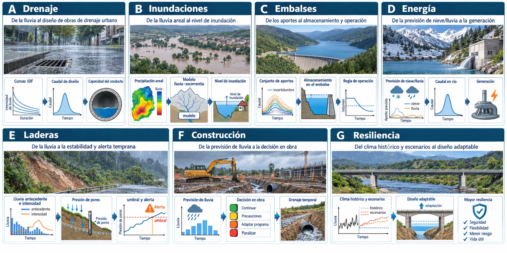
Figura 7.10 Cadenas lluvia-respuesta-decisión en aplicaciones de ingeniería civil. Composición editorial basada en material gráfico suministrado por el autor.
Cada subsección de aplicaciones está representada por un panel de la Figura 10: drenaje, inundaciones, embalses, energía, laderas, construcción y resiliencia.
7.10.1. Drenaje urbano y vial
El diseño de sumideros, colectores, cunetas, alcantarillas y obras de cruce requiere intensidades compatibles con el tiempo de concentración. En cuencas pequeñas puede emplearse el método racional:
donde las unidades deben ser consistentes. La principal incertidumbre no siempre es \(C\); puede ser una intensidad extrapolada desde registros cortos o diarios. Urbanización, obstrucción y reducción de almacenamiento hacen necesario evaluar escenarios y rutas seguras de excedencia.
7.10.2. Control de inundaciones
En cuencas medianas y grandes, la precipitación espacial y temporal alimenta modelos de eventos o continuos. Para pronóstico se prioriza latencia y combinación radar-satélite-estaciones; para diseño se priorizan homogeneidad, extremos y coherencia espacial. Presas, defensas fluviales y puentes requieren además evaluar tormentas regionales, simultaneidad entre subcuencas y propagación hidráulica.
7.10.3. Embalses y abastecimiento
Los balances de embalse usan precipitación directa, aportes de cuenca y evaporación. Para planificación importan secuencias multianuales, persistencia de sequías y cambios de régimen. Un sesgo pequeño en precipitación media puede amplificarse en escorrentía, sobre todo en cuencas áridas. Por ello se calibran modelos con varias variables y se analizan elasticidades.
7.10.4. Hidroelectricidad y operación
La precipitación y el almacenamiento nival condicionan generación y seguridad. Pronósticos por ensamble apoyan programación, mientras registros históricos sustentan energía firme y reglas de operación. La incertidumbre debe propagarse desde precipitación a caudal y volumen, evitando presentar una única trayectoria determinista.
7.10.5. Estabilidad de laderas y erosión
Deslizamientos pueden responder a intensidad corta, acumulación antecedente o ambas. Umbrales intensidad-duración se calibran con inventarios de eventos y deben reconocer falsos positivos y cambios de uso del suelo. En erosión y transporte de sedimentos importan energía cinética e intensidades subhorarias; totales diarios pueden ser insuficientes.
7.10.6. Construcción y geotecnia
La lluvia afecta excavaciones, compactación, bombeo, hormigonado, caminos temporales y seguridad de faenas. Una planificación operacional utiliza pronósticos y alertas; el dimensionamiento de drenajes temporales usa curvas de diseño acordes con duración de la obra y consecuencias. En geotecnia, la infiltración modifica succión y presión de poros, de modo que el antecedente de humedad importa tanto como la lluvia del día.
7.10.7. Infraestructura resiliente
El cambio climático desafía la hipótesis de que la distribución histórica permanecerá fija. No es apropiado multiplicar todas las lluvias por la tasa de Clausius-Clapeyron: la respuesta local depende de circulación, humedad y tormenta. Se recomienda combinar evidencia observada, proyecciones regionales, análisis de sensibilidad y diseño adaptable. El objetivo no es adivinar una lluvia futura exacta, sino evitar decisiones frágiles ante un rango plausible.
7.11. Flujo de trabajo reproducible

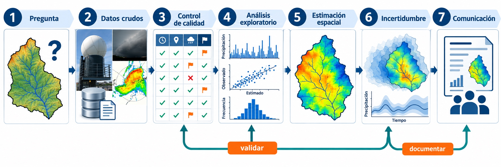
Figura 7.11 Siete etapas de un estudio reproducible de precipitación. Composición editorial basada en material gráfico suministrado por el autor.
Los siete paneles numerados de la Figura 11 corresponden directamente a las siete subsecciones del flujo de trabajo.
7.11.1. Etapa 1: formular la decisión
Se especifican obra, horizonte, escala, variable objetivo y tolerancia al riesgo. «Obtener precipitación» es demasiado amplio; «estimar máximos horarios areales para dimensionar un colector con vida útil de 30 años» es verificable.
7.11.2. Etapa 2: construir el inventario
Se descargan estaciones, metadatos y al menos dos fuentes grilladas conceptualmente diferentes. Se conserva el archivo original y se calcula una huella digital. Se documentan licencia, versión y fecha. En Chile se contrastan DGA/DMC con productos como CR2MET e IMERG, según la escala.
7.11.3. Etapa 3: armonizar
Se convierten unidades, calendario, zona horaria, fase y acumulación. Se recorta un período común sin perder la trazabilidad del período total. Los datos faltantes permanecen como ausentes y nunca como cero.
7.11.4. Etapa 4: controlar y explorar
Se aplican pruebas de integridad, completitud, consistencia temporal y espacial. Cada bandera se revisa con evidencia. Luego se describen ocurrencia, cantidades, estacionalidad, extremos y dependencia.
7.11.5. Etapa 5: modelar el espacio
Se compara un método base simple con alternativas que incorporan topografía o una grilla auxiliar. La validación se diseña antes de ajustar. Se evita seleccionar el método con los mismos datos utilizados para entrenarlo.
7.11.6. Etapa 6: propagar incertidumbre
Se evalúan escenarios de fuente, corrección, interpolación y parámetros. La dispersión entre resultados no se oculta en una cifra promedio. Para decisiones críticas se analiza cómo cada alternativa cambia el indicador de diseño.
7.11.7. Etapa 7: comunicar
El informe incluye mapa de estaciones, cobertura, decisiones de calidad, versiones, ecuaciones, validación y limitaciones. Se entregan datos procesados con banderas y código reproducible. Una cifra sin procedencia no es un resultado de ingeniería auditable.
7.12. Ejemplo conceptual integrado

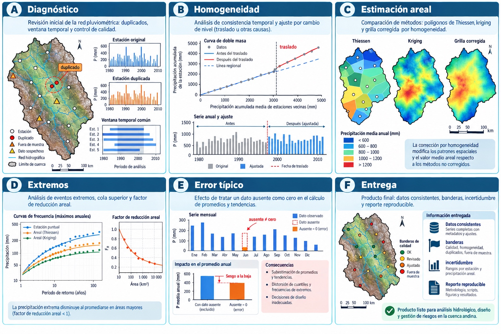
Figura 7.12 Integración de diagnóstico, homogeneización, estimación areal, extremos y entrega. Composición editorial basada en material gráfico suministrado por el autor.
La secuencia del ejemplo sigue los paneles de la Figura 12; los dos últimos anticipan los errores frecuentes y los requisitos de entrega auditable.
Considérese una cuenca andina con seis estaciones, fuertes gradientes de elevación y vacíos diarios. El objetivo es estimar precipitación media diaria para calibrar un modelo y máximos de 24 horas para revisar obras de cruce.
Primero se separan los objetivos: el modelo continuo requiere volumen y secuencia; el diseño requiere fidelidad en la cola. Se revisan códigos y se descubre que dos estaciones de portales distintos son el mismo sensor. Se corrigen unidades, se alinean días a 12:00 UTC y se eliminan duplicados, sin eliminar extremos.
Luego se grafica completitud y se forma un patrón regional con estaciones homogéneas. Un quiebre coincide con traslado de una estación; se evalúa una corrección mediante doble acumulación. Vacíos cortos se estiman con vecinos y una covariable grillada, conservando banderas. Un año con 40 % de ausencia se excluye del análisis de máximos.
Para precipitación areal se comparan Thiessen, IDW, regresión con elevación más kriging residual y corrección de una grilla satelital. La validación dejando una estación fuera muestra que la regresión-kriging reduce sesgo en cotas altas, pero subestima los dos mayores eventos. La solución operativa usa ese campo para el modelo continuo y un factor areal derivado de tormentas observadas para extremos. Esta elección dual es más defendible que declarar un método universalmente superior.
7.13. Errores frecuentes
Confundir cero con dato faltante. Produce sequías ficticias y sesgo negativo.
Mezclar tasa y acumulación. Sumar tasas sin multiplicar por duración altera el volumen.
Ignorar la ventana diaria. Desplaza tormentas y degrada comparaciones.
Validar con estaciones usadas en el ajuste. Sobreestima desempeño.
Interpretar resolución nominal como detalle real. Una celda pequeña puede contener información suavizada.
Rellenar antes de controlar. Propaga errores y oculta quiebres.
Eliminar extremos por ser extremos. Borra información de diseño.
Interpolar fuera de la red sin advertencia. Convierte extrapolación en un mapa aparentemente preciso.
Usar sólo correlación. Ignora sesgo, volumen y ocurrencia.
No registrar versión. Impide reproducir resultados cuando el proveedor reprocesa el producto.
7.14. Actividades de aprendizaje

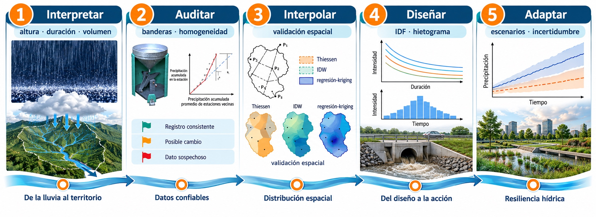
Figura 7.13 Ruta de aprendizaje desde el cálculo de volumen hasta el diseño adaptable. Composición editorial basada en material gráfico suministrado por el autor.
Los cinco paneles de la Figura 13 corresponden a las cinco actividades y, en conjunto, resumen el recorrido desde la interpretación física hasta el diseño adaptable.
7.14.1. Actividad 1: de tormenta a volumen
Una cuenca de 35 km² recibe una precipitación areal estimada de 18 mm. Calcule el volumen bruto. Si el coeficiente de escorrentía de evento se aproxima a 0,42, estime el volumen de escorrentía y discuta por qué el valor no determina por sí solo el caudal punta.
7.14.2. Actividad 2: diagnóstico de calidad
Una estación muestra 0 mm durante seis días, 126 mm el séptimo y las estaciones vecinas registran 15–25 mm cada día. Formule al menos tres hipótesis, enumere los metadatos o datos auxiliares necesarios y proponga banderas antes de decidir una corrección.
7.14.3. Actividad 3: producto apropiado
Seleccione fuentes para: (a) alerta de inundación en tiempo casi real; (b) climatología mensual 1981–2020; (c) calibración diaria de una cuenca andina; y (d) análisis de una tormenta convectiva urbana. Justifique latencia, resolución, soporte y validación.
7.14.4. Actividad 4: validación espacial
Diseñe una validación para comparar Thiessen, IDW y regresión-kriging con 20 estaciones. Explique por qué retirar observaciones diarias al azar no es suficiente y qué métricas usaría para volumen, ocurrencia y extremos.
7.14.5. Actividad 5: decisión de ingeniería
Una curva IDF histórica y una proyección climática producen intensidades de diseño que difieren 18 %. Proponga un análisis de sensibilidad que incluya vida útil, consecuencias de falla, ampliación futura y rutas de excedencia. Evite convertir una única proyección en certeza.
7.15. Síntesis
La precipitación surge cuando la dinámica atmosférica produce saturación y la microfísica permite que gotas o cristales crezcan lo suficiente para alcanzar la superficie. Convección, orografía y sistemas frontales organizan ese proceso y explican gran parte de su variabilidad espacial y temporal. En Chile, el gradiente norte-sur, la influencia del Pacífico y la topografía hacen imprescindible un análisis regional.
Los pluviómetros son referencias puntuales; radar y satélite describen estructura espacial con relaciones indirectas; reanálisis aportan coherencia física; y productos fusionados combinan información con dependencias que deben conocerse. DGA, DMC y CR2 ofrecen fuentes centrales para Chile, complementadas por redes y productos globales.
El análisis responsable comienza con metadatos y control de calidad, separa ocurrencia de cantidad, conserva extremos plausibles, distingue observación de relleno y valida interpolaciones fuera de muestra. En ingeniería civil, la fuente y el método se seleccionan según la decisión: el mejor dato no es el de mayor resolución nominal, sino el que representa la variable, escala y riesgo relevantes con incertidumbre documentada.
7.16. Verificación de aprendizaje
Preguntas conceptuales
Compare la formación de precipitación por colisión-coalescencia y por el proceso Bergeron-Findeisen. ¿En qué tipos de nube y rangos térmicos espera que domine cada mecanismo?
Distinga lo que observan un pluviómetro, un radar, un satélite y un reanálisis. ¿Por qué una resolución espacial nominal más fina no garantiza una precipitación más exacta?
Explique por qué cero, dato faltante y acumulación multidiaria deben representarse de manera diferente durante el control de calidad.
Compare promedio aritmético, Thiessen, IDW y regresión-kriging. ¿Qué supuestos espaciales introduce cada método y cómo diseñaría una validación realmente independiente?
Preguntas numéricas y de aplicación
Una tormenta acumula 54 mm en 90 minutos sobre una cuenca de 65 km². Calcule la intensidad media en mm/h y el volumen bruto precipitado. Si el coeficiente de escorrentía es 0,38, estime el volumen de escorrentía sin confundirlo con caudal punta.
Tres estaciones registran 42, 58 y 71 mm y sus polígonos de Thiessen ocupan 25 %, 45 % y 30 % de la cuenca. Calcule la precipitación areal y compárela con el promedio aritmético. Explique el origen de la diferencia.
Una obra se diseña para un evento con período de retorno de 50 años y vida útil de 30 años. Calcule la probabilidad de al menos una excedencia mediante \(R=1-(1-1/T)^n\) e interprete el resultado para una decisión de seguridad.
En una estación, 26 de 30 días tienen datos válidos y suman 104 mm; los cuatro días ausentes coinciden con una tormenta observada por estaciones vecinas. Calcule la completitud, decida si informaría un total mensual y proponga un procedimiento de estimación y marcado que preserve la trazabilidad.
7.17. References
Alexandersson, H. A homogeneity test applied to precipitation data. Journal of Climatology, 6:661–675, 1986. doi:10.1002/joc.3370060607.
Alvarez-Garreton, C., Mendoza, P. A., Boisier, J. P., and others. The camels-cl dataset: catchment attributes and meteorology for large sample studies–chile dataset. Hydrology and Earth System Sciences, 22:5817–5846, 2018. doi:10.5194/hess-22-5817-2018.
Ashouri, H., Hsu, K.-L., Sorooshian, S., and others. Persiann-cdr: daily precipitation climate data record from multisatellite observations for hydrological and climate studies. Bulletin of the American Meteorological Society, 96:69–83, 2015. doi:10.1175/BAMS-D-13-00068.1.
Beck, H. E., Wood, E. F., Pan, M., and others. Mswep v2 global 3-hourly 0.1 degree precipitation: methodology and quantitative assessment. Bulletin of the American Meteorological Society, 100:473–500, 2019. doi:10.1175/BAMS-D-17-0138.1.
Becker, A., Finger, P., Meyer-Christoffer, A., Rudolf, B., Schamm, K., Schneider, U., and Ziese, M. A description of the global land-surface precipitation data products of the global precipitation climatology centre with sample applications including centennial trend analysis from 1901–present. Earth System Science Data, 5:71–99, 2013. doi:10.5194/essd-5-71-2013.
Boisier, J. P. Cr2met: a high-resolution precipitation and temperature dataset for the period 1960–2021 in continental chile. 2023. doi:10.5281/zenodo.7529682.
Chow, V. T., Maidment, D. R., and Mays, L. W. Hidrología aplicada. McGraw-Hill, 1994.
Funk, C., Peterson, P., Landsfeld, M., Pedreros, D., Verdin, J., Shukla, S., Husak, G., Rowland, J., Harrison, L., Hoell, A., and Michaelsen, J. The climate hazards infrared precipitation with stations–a new environmental record for monitoring extremes. Scientific Data, 2:150066, 2015. doi:10.1038/sdata.2015.66.
Garreaud, R. D. The andes climate and weather. Advances in Geosciences, 22:3–11, 2009. doi:10.5194/adgeo-22-3-2009.
Hakim, G. J. and Patoux, J. Weather: A Concise Introduction. Cambridge University Press, 2nd edition, 2022.
Hersbach, H., Bell, B., Berrisford, P., and others. The era5 global reanalysis. Quarterly Journal of the Royal Meteorological Society, 146:1999–2049, 2020. doi:10.1002/qj.3803.
Huffman, G. J., Stocker, E. F., Bolvin, D. T., Nelkin, E. J., and Jackson, T. Gpm imerg final precipitation l3 half hourly 0.1 degree x 0.1 degree v06. Goddard Earth Sciences Data and Information Services Center, 2020. doi:10.5067/GPM/IMERG/3B-HH/06.
Ly, S., Charles, C., and Degré, A. Different methods for spatial interpolation of rainfall data for operational hydrology and hydrological modeling at watershed scale: a review. Biotechnology, Agronomy, Society and Environment, 17(2):392–406, 2013.
Mankin, K. R., Mehan, S., Green, T. R., and Barnard, D. M. Review of gridded climate products and their use in hydrological analyses reveals overlaps, gaps, and the need for a more objective approach to selecting model forcing datasets. Hydrology and Earth System Sciences, 29:85–108, 2025. doi:10.5194/hess-29-85-2025.
Menne, M. J., Durre, I., Vose, R. S., Gleason, B. E., and Houston, T. G. An overview of the global historical climatology network-daily database. Journal of Atmospheric and Oceanic Technology, 29(7):897–910, 2012. doi:10.1175/JTECH-D-11-00103.1.
Muñoz-Sabater, J., Dutra, E., Agustí-Panareda, A., and others. Era5-land: a state-of-the-art global reanalysis dataset for land applications. Earth System Science Data, 13:4349–4383, 2021. doi:10.5194/essd-13-4349-2021.
Pettitt, A. N. A non-parametric approach to the change-point problem. Applied Statistics, 28(2):126–135, 1979. doi:10.2307/2346729.
Serrano-Notivoli, R. and Tejedor, E. From rain to data: a review of the creation of monthly and daily station-based gridded precipitation datasets. WIREs Water, 8(6):e1555, 2021. doi:10.1002/wat2.1555.
Shaw, E. M., Beven, K. J., Chappell, N. A., and Lamb, R. Hydrology in Practice. Spon Press, 4th edition, 2011.
Sun, Q., Miao, C., Duan, Q., Ashouri, H., Sorooshian, S., and Hsu, K.-L. A review of global precipitation data sets: data sources, estimation, and intercomparisons. Reviews of Geophysics, 56(1):79–107, 2018. doi:10.1002/2017RG000574.
Viney, N. R. and Bates, B. C. It never rains on sunday: the prevalence and implications of untagged multi-day rainfall accumulations in the australian high quality data set. International Journal of Climatology, 24:1171–1192, 2004. doi:10.1002/joc.1053.
Wallace, J. M. and Hobbs, P. V. Atmospheric Science: An Introductory Survey. Elsevier, 2nd edition, 2006.
Zambrano-Bigiarini, M., Nauditt, A., Birkel, C., Verbist, K., and Ribbe, L. Temporal and spatial evaluation of satellite-based rainfall estimates across the complex topographical and climatic gradients of chile. Hydrology and Earth System Sciences, 21:1295–1320, 2017. doi:10.5194/hess-21-1295-2017.
Dirección General de Aguas. Estadísticas de estaciones dga. Ministerio de Obras Públicas, Gobierno de Chile, 2026. Consultado el 26 de septiembre de 2026. URL: https://dga.mop.gob.cl/estadisticas-estaciones-dga/.
Dirección Meteorológica de Chile. Portal de servicios climáticos. Dirección General de Aeronáutica Civil, Gobierno de Chile, 2026. Consultado el 26 de septiembre de 2026. URL: https://climatologia.meteochile.gob.cl/.
Global Precipitation Climatology Centre. Gpcc precipitation analysis monthly version 2025. Deutscher Wetterdienst, 2025. URL: https://opendata.dwd.de/climate_environment/GPCC/.